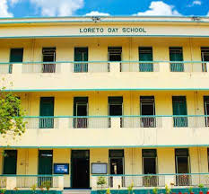

Abhipsa Chakraborty
Renewable Energy Engineer | Biotechnology Graduate
Passionate about renewable energy, wind energy, scientific research,
biotechnology and laboratory techniques.
Download CV
My Journey
Who I Am
Hello! I'm Abhipsa Chakraborty, a Renewable Energy Engineer specializing in Wind Energy and a Biotechnology graduate. I am passionate about renewable energy, sustainability, research, and engineering solutions that create a positive environmental impact.

School Life
My interest in science began during my school years, where I developed curiosity about biology, mathematics, and problem-solving. These experiences inspired me to pursue engineering and scientific research.

Bachelor's in Biotechnology
My journey in biotechnology began with a deep curiosity about life sciences and the role of research in improving human health and environmental sustainability. Pursuing a Bachelor of Technology in Biotechnology provided me with a strong foundation in microbiology, molecular biology, genetics, biochemistry, immunology, bioprocess engineering, and environmental biotechnology through both theoretical studies and practical laboratory experience.
Throughout my undergraduate studies, I developed hands-on laboratory skills in microbial culture, aseptic techniques, spectrophotometry, chromatography, sample preparation, biochemical analysis, and scientific documentation. Practical coursework and research projects strengthened my analytical thinking, problem-solving abilities, attention to detail, and teamwork.
A significant milestone in my academic journey was completing an internship at the Indian Institute of Technology (IIT) Kharagpur, where I worked on biodiesel production from *Jatropha curcas*. This experience introduced me to biofuel production, biomass conversion, renewable energy concepts, and sustainable research practices while enhancing my experimental and data analysis skills.
In addition, I completed practical training in biogas production, gaining experience in biomass processing, anaerobic digestion, process monitoring, and renewable bioenergy technologies. These experiences broadened my understanding of how biotechnology can contribute to sustainable energy solutions and environmental protection.
My biotechnology education not only strengthened my scientific knowledge and laboratory expertise but also inspired my transition into renewable energy engineering. The interdisciplinary skills I developed continue to support my work in wind energy, where I aim to contribute to innovative and sustainable energy solutions through research, engineering, and continuous learning.


Renewable Energy
My journey into renewable energy began with a desire to contribute to a more sustainable future and address global energy and climate challenges. To pursue this goal, I enrolled in the European Master in Renewable Energy (EUREC), specializing in Wind Energy at the National Technical University of Athens (NTUA), Greece. This experience allowed me to combine engineering principles with practical applications in renewable energy systems.
Throughout my master's studies, I gained a strong understanding of wind energy, solar energy, biomass, marine energy, electrical engineering, energy storage, and numerical modelling. My coursework was complemented by hands-on laboratory sessions, engineering projects, and technical workshops, strengthening both my theoretical knowledge and practical problem-solving abilities.
A major highlight of my master's program was participating in the design, manufacturing, and testing of a small-scale wooden wind turbine. Working as part of a team, I contributed to blade fabrication, turbine assembly, and wind tunnel experiments to evaluate aerodynamic performance through the power coefficient (Cp) and tip-speed ratio (λ). This project provided valuable experience in wind turbine design, experimental testing, data analysis, and engineering teamwork.
In addition to academic projects, I expanded my technical skills through training and workshops on wind energy software, numerical modelling, wind resource assessment, and turbine performance analysis. These experiences strengthened my understanding of renewable energy technologies and prepared me to work in multidisciplinary engineering environments.
My master's journey reinforced my passion for renewable energy and inspired me to pursue a career in the wind energy sector. I am committed to applying my technical knowledge, research experience, and problem-solving skills to support the global transition toward clean, reliable, and sustainable energy.

Bachelor of Technology in Biotechnology

European Master in Renewable Energy
Academic Milestones
My academic journey reflects my passion for science and engineering. I completed my Bachelor of Technology in Biotechnology, building a strong foundation in laboratory research and analytical sciences. Later, I pursued the European Master in Renewable Energy with a specialization in Wind Energy, where I developed expertise in renewable energy systems, wind turbine aerodynamics, and sustainable engineering. These experiences have prepared me to contribute to innovative projects supporting the global energy transition.
Bachelor's Thesis
FUNDAMENTALS OF RAMAN SPECTROSCOPY AND SURFACE ENHANCED RAMAN SPECTROSCOPY (SERS) AS AN ADVANCED POTENTIAL TOOL FOR DIAGNOSING INFECTIOUS DISEASES AND OTHER DISORDERS .
• Research objective: The objective of this research is to study the fundamental principles of Raman Spectroscopy and Surface-Enhanced Raman Spectroscopy (SERS) and evaluate their significance as rapid, non-destructive, and highly sensitive analytical techniques in biomedical research. The study aims to understand the mechanism of Raman scattering, including Stokes and anti-Stokes shifts, and explore how SERS enhances molecular detection using metallic nanostructures. Furthermore, it seeks to investigate the applications of SERS in the identification and quantification of biomarkers for diseases such as cancer, diabetes, cardiovascular disorders, neurological diseases, and viral and bacterial infections. The research also aims to assess the potential of SERS in real-time biosensing, disease diagnosis, and clinical monitoring, highlighting its advantages and future prospects in healthcare and biomedical diagnostics.
• Methodology: This study adopts an experimental research approach to investigate the principles and biomedical applications of Raman Spectroscopy and Surface-Enhanced Raman Spectroscopy (SERS). Initially, suitable SERS substrates based on gold or silver nanoparticles are prepared or procured to enhance the Raman signal of biological analytes. Standard biological samples or disease-related biomarkers, such as glucose, proteins, neurotransmitters, or pathogen-associated molecules, are prepared under controlled laboratory conditions and applied to the SERS substrate.
The samples are analyzed using a Raman spectrometer equipped with an appropriate excitation laser (e.g., 532 nm, 633 nm, or 785 nm). Raman spectra are collected under optimized instrumental conditions to obtain reproducible molecular fingerprints. Spectral preprocessing, including baseline correction, noise reduction, normalization, and peak identification, is performed to improve data quality.
The processed spectra are subsequently analyzed using statistical and chemometric techniques such as Principal Component Analysis (PCA), Linear Discriminant Analysis (LDA), or Partial Least Squares (PLS) to differentiate between sample groups and identify characteristic biomarkers. The analytical performance of the technique is evaluated based on sensitivity, specificity, reproducibility, and limit of detection. Finally, the experimental findings are compared with previously published studies to validate the effectiveness of Raman Spectroscopy and SERS for biomedical diagnostics, biomarker detection, disease monitoring, and biosensing applications.
• Results: The study demonstrates that Raman Spectroscopy and Surface-Enhanced Raman Spectroscopy (SERS) are powerful analytical techniques for rapid, non-destructive, and highly sensitive molecular detection. The reviewed findings indicate that SERS significantly enhances Raman signals through the use of metallic nanostructures, enabling the detection of low-concentration biomolecules and disease biomarkers. The technique has shown promising applications in the diagnosis of various diseases, including cancer, diabetes, cardiovascular disorders, neurological diseases, and bacterial and viral infections. Furthermore, the integration of SERS with advanced statistical and chemometric analysis improves the accuracy of disease classification and biomarker identification. Overall, the findings suggest that SERS possesses excellent potential for real-time biosensing, early disease detection, and clinical diagnostics, making it a valuable tool for future biomedical research and personalized healthcare.
• Conclusion: SERS grants for the constant, extremely sensitive diagnosis and calibration of different biomarkers and end products of ailments states, which marks it as an excellent choice in the identification and treatment of many disorders that are global public health apprehension. With progress in instrumentation and as techniques for higher selectivity towards reducing LODs are evolved, SERS will remain an indispensable technique, and pursue to display great potential, for in vivo and in vitro disease diagnosis. The capability to establish substrates from gold, which is non-virulent during in vivo application, is a supplementary welfare supplied by SERS. SERS is likely to assist the scope, longevity and convenience of constant glucose checking technology, as well as assistance in earlier diagnosis of neurological, viral, cardiovascular diseases, and cancer. As LODs are reduced by the development of more highly strengthen substrates, more enlightened capture policies, and multimodal imaging techniques, it is superficial that SERS will resume to remain at the forefront of highly sensitive analysis in both in vivo and in vitro utilization.
Read Bachelor's Thesis
Master's Thesis
On the Definition of a Benchmarking Framework for the Fatigue Analysis of Offshore Wind Turbines
Describe your research: This research investigates the fatigue reliability of mooring systems in floating offshore wind turbines (FOWTs) under varying environmental conditions. The study focuses on understanding how wind, waves, and other environmental factors influence the structural behaviour of the mooring lines, floating platform, and wind turbine. Two different turbine capacities (**5 MW and 15 MW**) and two major floating platform concepts (spar and semi-submersible) are analysed to evaluate the effect of turbine scale and platform type on mooring performance and service life.
Numerical simulations are carried out using OrcaFlex, a finite element time-domain software, to model the coupled dynamic response of the floating platform, turbine, and mooring system. Multiple environmental load cases are simulated, and the resulting responses are statistically analysed to determine the influence of environmental conditions on key structural parameters. Fatigue analysis is performed using the **rainflow counting method**, allowing the cumulative fatigue damage and expected lifetime of the mooring lines to be estimated.
The results indicate that surge motion is the most environmentally sensitive platform response, while velocity and acceleration are more affected by environmental loading than mooring line tension. The study further demonstrates that fatigue damage increases with increasing turbine capacity, leading to a reduction in mooring service life. Among the investigated platform types, spar platforms exhibit longer mooring lifetimes than semi-submersible platforms. Overall, the research provides valuable insights for the design, optimization, and reliability assessment of floating offshore wind turbine mooring systems under realistic operating conditions.
Software Used:
OrcaFlex – Finite element, time-domain simulation software used to model the dynamic behaviour of floating offshore wind turbines, mooring lines, and platform responses under varying environmental conditions.
Microsoft Excel – Used for organizing simulation data, performing statistical calculations, generating graphs, plotting trendlines, and determining correlation coefficients (R² values).
Python – Used for data processing, statistical analysis, fatigue calculations, data visualization, and automation of simulation result analysis.
Rainflow Counting Algorithm – Applied for fatigue cycle counting and cumulative fatigue damage assessment to estimate the service life of mooring lines.
Analysis: The simulation results obtained from OrcaFlex were analyzed to evaluate the dynamic response and fatigue performance of floating offshore wind turbine mooring systems under different environmental conditions. Time-domain response data for the platform, turbine, and mooring lines were extracted for each load case and statistically processed using Microsoft Excel and Python.
Statistical parameters, including the mean, maximum, minimum, and standard deviation, were calculated for key response variables such as surge, sway, heave, pitch, roll, yaw, mooring line effective tension, velocity, and acceleration. Graphs were plotted with environmental conditions on the x-axis and the corresponding response parameters on the y-axis. Trendline analysis and the coefficient of determination (R²) were used to identify the environmental factors that most strongly influenced the structural response.
Fatigue analysis was carried out using the **Rainflow Counting Method**, where stress cycles obtained from the mooring line tension histories were counted and cumulative fatigue damage was calculated. The total fatigue damage was then used to estimate the service life of the mooring lines. A comparative analysis was performed between the **5 MW and 15 MW** floating offshore wind turbines and between **spar** and **semi-submersible** platform configurations to assess the influence of turbine size and platform type on fatigue degradation and mooring reliability. The analyzed results were interpreted to determine the most critical environmental conditions and to evaluate the long-term structural performance of the floating offshore wind turbine systems.
Results:The simulation and fatigue analyses revealed that environmental conditions have a significant influence on the dynamic behaviour and structural performance of floating offshore wind turbine mooring systems. Among the six degrees of freedom, **surge motion** exhibited the highest sensitivity to changing environmental conditions. Platform velocity and acceleration showed greater variation with environmental loading than the effective tension in the mooring lines.
The comparative analysis of the **5 MW and 15 MW** floating offshore wind turbines indicated that increasing turbine capacity results in higher mooring loads and greater fatigue damage, thereby reducing the expected service life of the mooring system. Fatigue life was estimated using the Rainflow Counting Method, which demonstrated that cumulative fatigue damage increases with turbine scale.
A comparison of floating platform concepts showed that the **spar platform** provided a longer mooring service life than the **semi-submersible platform** due to its improved fatigue performance under similar operating conditions. Overall, the results highlight the importance of environmental loading, platform design, and turbine capacity in determining the long-term reliability and durability of floating offshore wind turbine mooring systems.
Contribution:
Read Master's Thesis
Curriculum Vitae
Download the latest version of my Curriculum Vitae.
Download CV